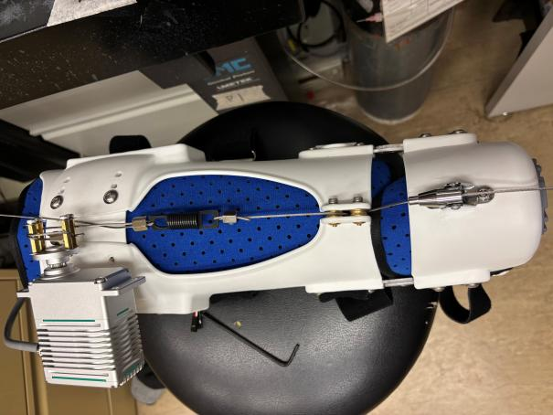
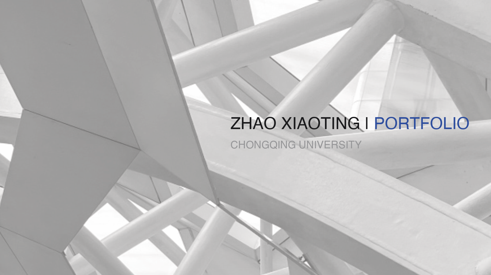

600+用户问卷
20+深度访谈
从睡眠数据体验到市场进入策略，连接产品价值、使用场景与用户理解。
建筑学与计算机科学的交叉训练，让我习惯从复杂系统中寻找清晰路径。目前关注 GTM、商业化与产品用户体验。


建筑训练给我的不只是空间表达：它要求我同时考虑人的行为、不同角色的需求，以及方案落地时的成本与约束——这套方法训练了我对复杂实体推动落地的能力。后来做产品，相通之处正在这里：都是在复杂条件下做取舍。
查看完整作品集 · 17 页 PDF ↗I work between product thinking, visual storytelling and making things real.
我本科就读于重庆大学建筑学专业，目前在香港大学学习创新设计与技术。经历横跨智能硬件、移动产品、内容增长和空间设计。
我喜欢先理解人和场景，再用原型、数据和清楚的叙事推动项目向前。